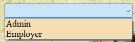
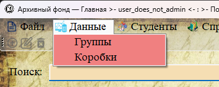

В системе предусмотрены две роли пользователей: «Администратор» (Admin) и «Сотрудник» (Employer). Роль определяет набор доступных функций в программе.

Рис. 1. Выбор роли при создании или редактировании пользователя
Сравнение ролей
| Функция | Администратор | Сотрудник | Примечание |
|---|---|---|---|
| Просмотр всех разделов | ✓ | ✓ | Оба видят данные |
| Добавление/редактирование/удаление данных | ✓ | ✓ | Оба могут изменять данные |
| Управление пользователями | ✓ | ✗ | Только для администратора |
| Резервное копирование и восстановление | ✓ | ✗ | Только для администратора |
Роль «Администратор» (Admin)

Рис. 2. Меню для пользователя с ролью «Администратор»
Пользователь с ролью «Администратор» имеет полный доступ ко всем функциям системы:
— Просмотр, добавление, редактирование и удаление данных во всех разделах.
— Доступ к разделу «Пользователи» (создание, редактирование, удаление учётных записей).
— Доступ к функциям резервного копирования и восстановления базы данных.
Роль «Сотрудник» (Employer)

Рис. 3. Меню для пользователя с ролью «Сотрудник» (нет пункта «Пользователи»)
Пользователь с ролью «Сотрудник» имеет ограниченный доступ:
— Просмотр, добавление, редактирование и удаление данных во всех разделах, кроме раздела «Пользователи».
— Не имеет доступа к резервному копированию и восстановлению.
Как определить свою роль

Рис. 4. В заголовке главного окна отображается логин и ФИО текущего пользователя
Текущий пользователь может определить свою роль:
— По наличию пункта меню «Данные → Пользователи» (есть только у администратора).
— По наличию кнопок «Создать резервную копию» и «Восстановить» в форме управления пользователями (только у администратора).

Рис. 5. Форма «Пользователи» (доступна только Admin) — здесь есть кнопки бэкапа
Рекомендации по назначению ролей
— Администратор — должен быть один или несколько ответственных сотрудников, которые управляют учётными записями и выполняют резервное копирование.
— Сотрудник — все остальные работники архива, которые работают с данными, но не должны иметь доступ к администрированию.